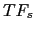
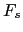
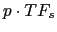
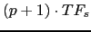
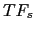
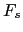
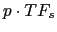
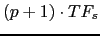
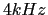

Next: Derivative Filtering Up: Energy-Based Speech/non-Speech Detector with Previous: Energy-Based Speech/non-Speech Detector with Contents
Due to the different sources and recording setups, the average amplitude of the signal to be processed can vary over a large range. Therefore it needs to be normalized to be able to bring consistency in the follow-on processing. A standard energy average over all the recording would not be plausible due to the existence of extended silence regions and of sudden noise bursts. In order to compute the normalization constant was chosen, which is more robust to these effects as shown in equation 4.1. This same expression is used in the filter&sum processing to obtain the overall channels weighting factor of the input signals 5.2.2.
where  is the total amount of non overlapped blocks
of duration  (with  being the sampling rate in
samples/second, and T is the analysis segment size in seconds) in
the recording. Each block of samples ranges from

to

is the total amount of non overlapped blocks
of duration  (with  being the sampling rate in
samples/second, and T is the analysis segment size in seconds) in
the recording. Each block of samples ranges from

to

Finally a low-pass Butterworth filter deletes all high band noises leaving only information of the signal below . This is done because the major part of the energy of the signal is contained in this band and no information is needed but the energy at this point of the non-speech detection process. This Butterworth filter has been implemented using its IIR form.
user 2008-12-08